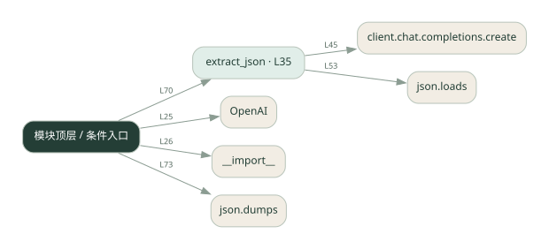

1-14 · 全课程第 14 节
结构化结果
014.py
源码快照 066f57c8a408 · 静态解析 · 2026-09-10
01 / 要完成的事
让模型输出 JSON，解析失败时反馈错误并重试。
02 / 为什么要做
程序需要可靠字段，不能只接收一段自由文本。
03 / 当前代码状态
存在外部服务或模型依赖；执行前需按源文件配置依赖和凭据，可能联网或产生 API 费用。 本次只做静态解析，没有运行练习，也没有替你填写或修改原代码。
04 / 调用图
打开大图 ↗实线：源码中的直接调用；虚线：函数引用/注册、动态调用或按方法名推断的候选。L 是调用所在源码行号。箭头不表示执行顺序或每次必经；分支、循环、异步调度及框架内部调用需结合源码。灰色是外部/未解析目标，橙色是动态分发；省略 print、len 和常规容器操作以减少干扰。孤立函数可能尚未接入。

先从 模块入口 出发，沿箭头找到本文件函数，再查看外部调用或动态分发。右侧调用清单保留所有静态调用点，能回到原文件逐行对照。
05 / 函数定位
| 函数 / 定义行 | 职责（源码注释） | 内部调用 |
|---|---|---|
extract_jsonL35 | 让 LLM 从文本提取信息，输出 JSON，失败自动修正重试 | range, client.chat.completions.create, json.loads, print, messages.append |
这样做的优点
结果可以进入后续函数和数据存储。
代价与局限
合法 JSON 不代表字段完整或内容正确；仍需类型和业务校验。
适用场景
信息抽取、表单填充、机器间传值。
不宜直接照搬
仅凭能解析就执行敏感操作。
动手检验理解
让输入缺少一个字段，检查结果是明确空值还是模型编造。
有未实现位置时先预测，再补齐验证。能启动不等于逻辑正确。
查看全部 17 个静态调用 / 引用点
| 调用方 | 目标 | 源码行 | 类型 |
|---|---|---|---|
| <模块入口> | OpenAI | 25 | 调用 |
| <模块入口> | __import__ | 26 | 调用 |
| extract_json | range | 44 | 调用 |
| extract_json | client.chat.completions.create | 45 | 调用 |
| extract_json | json.loads | 53 | 调用 |
| extract_json | print | 56 | 调用 |
| extract_json | messages.append | 60 | 调用 |
| extract_json | messages.append | 61 | 调用 |
| <模块入口> | print | 66 | 调用 |
| <模块入口> | print | 67 | 调用 |
| <模块入口> | print | 68 | 调用 |
| <模块入口> | print | 69 | 调用 |
| <模块入口> | extract_json | 70 | 调用 |
| <模块入口> | print | 71 | 调用 |
| <模块入口> | print | 72 | 调用 |
| <模块入口> | print | 73 | 调用 |
| <模块入口> | json.dumps | 73 | 调用 |